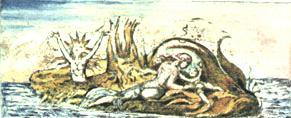

Antik Çağın Şairleri tüm sezilir nesneleri, onlara, çoğalttıkları ve sayısız duyunun algılayabileceği her şeyin, ormanların, ırmakların, dağların, göllerin, kentlerin, ulusların adlarını vererek ve bunların özellikleriyle donatarak, Tanrılar ve Deha ile canlandırdılar.
Ve özellikle, her kentin ve ülkenin dehasını, onun zihinsel tanrısının altına yerleştirerek incelediler.
Ta ki, çıkarcı bazı kişilerin, zihinsel tanrıları anlamaya ya da cisimlerinden soyutlamaya çalışarak avamı köleleştirdiği bir sistem oluşuncaya dek, ki böyle başladı Rahiplik.
Şiirsel masallardan tapınma biçimleri seçerek.
Ve an geldi, Tanrıların bu tür şeyler emrettiğini bildirdiler.
Böylece insanlar, Bütün Tanrısal Varlıkların insanoğlunun gönlünde barındığını unuttular.